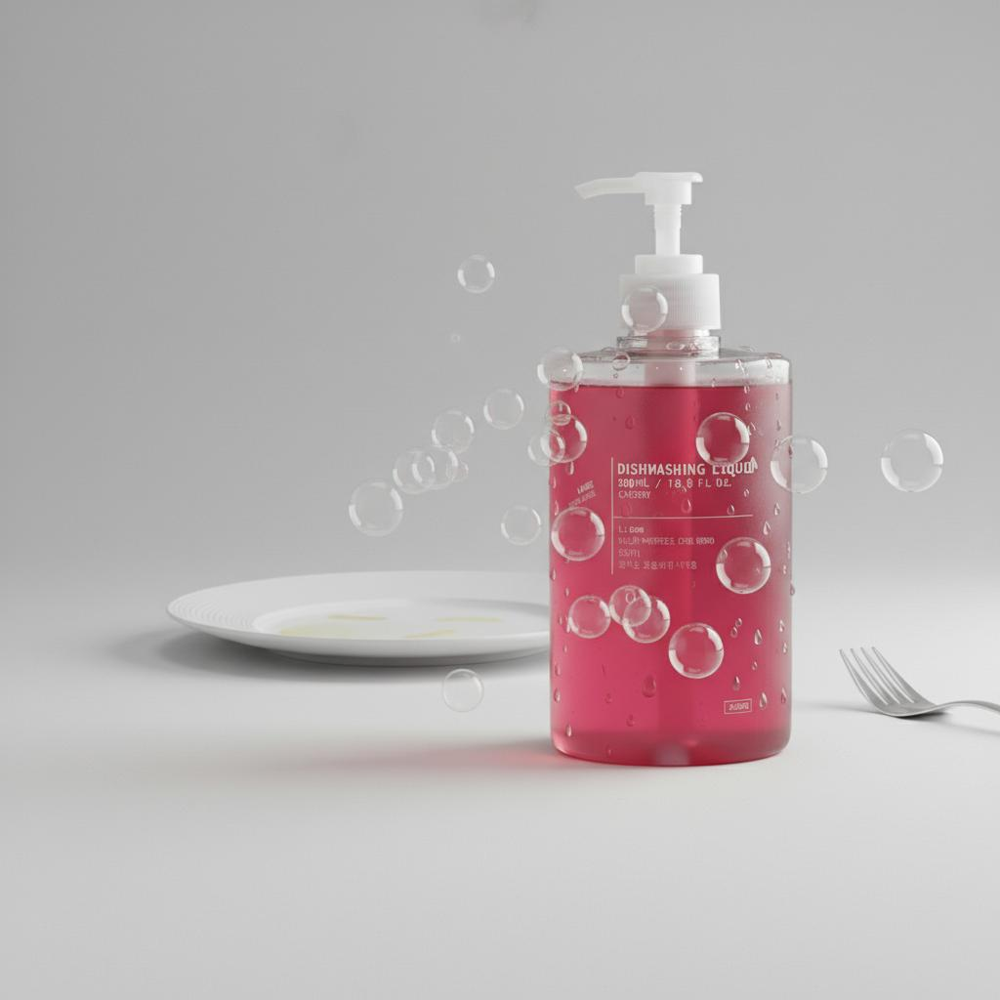
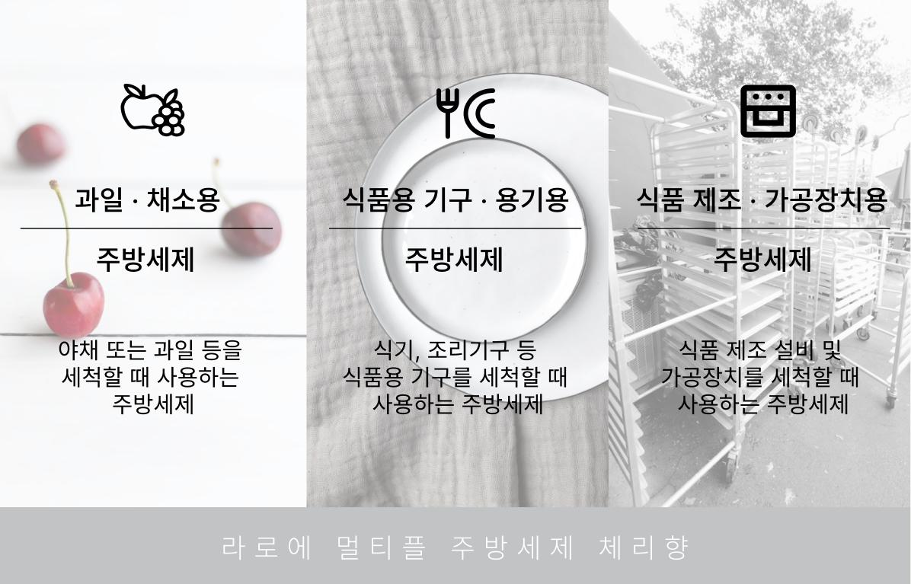
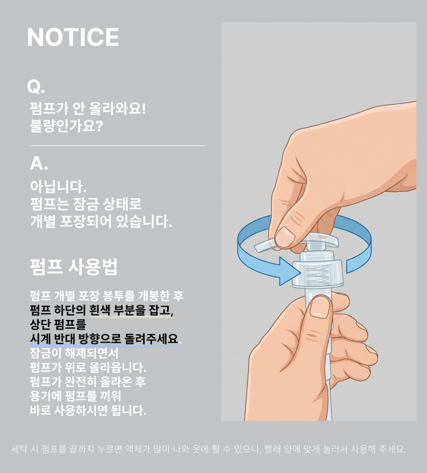

LAROE Dishwashing Liquid
하나로 해결하는 멀티플 솔루션
The Question
남아있는 기름기
금방 꺼지는 거품
기분 나쁜 음식냄새
Point 01 — Ingredients
당신의 주방을 위해, 성분을 다이어트했습니다.
무의미한 첨가물을 덜어내고 세정 본질에 집중
과일·채소 세척 가능 성분 사용 (과일ㆍ채소용 세척제)
식품의약품안전처 고시 기준 적합
Point 02 — Lather & Cleanse
설거지 처음부터 끝까지 살아있는 거품

Point 03 — Mildness & Scent
피부 자극 최소화 설계 & 달콤한 힐링 타임
글리세린 등 식물성 보습 성분 함유로
피부 당김을
방지합니다.
스윗한 체리향으로 설거지가 지루한
집안일에서 향기로운
힐링 시간으로 바뀝니다.

How to use
수세미에 적당량을 펌핑하여 거품을 내어 닦아준 뒤, 5초 이상 깨끗한 물에 헹궈주세요.
식용 원료를 씻을 수 있는
과일ㆍ채소용 세척제입니다. 흐르는 물에 30초~1분 이상 충분히 씻어 잔여물을 말끔히 제거해 주세요.
펌프는 잠금 상태로 개별 포장되어 있습니다.
하단의 흰색 부분을 잡고 상단 펌프를 시계 반대 방향으로 돌려 잠금을 해제 후 용기에 끼워 사용하세요.

FAQ
Disclosure
| 위생용품의 유형 | 과일ㆍ채소용 세척제 |
| 제품명 | 라로에 멀티플 주방세제 체리향 |
| 내용량 | 500ml |
| 유통기한 | 제조일로부터 24개월 |
| 제조연월 | 별도표시 |
| 제조국명 | 대한민국 |
| 제조원 | 주식회사 제이엔케이코스 2공장 / 경상북도 칠곡군 약목면 복성20길 34 |
| 판매원 | 라로에 laroe / 경기도 의왕시 백운호수로5길 15, 1층상가 104호(학의동) |
사용 물질 및 성분명
| 정제수, 라우릴 에테르 황산나트륨, 코카미도프로필베타인, 알킬디메틸아민옥사이드, 알킬벤젠설폰네이트, 염화나트륨, 글리세린, 탄산나트륨, 안식향산나트륨, 수산화나트륨, 체리향(2000mg/kg), 적색2호 |
사용 안내
표준사용량
물1L당 3ml 사용
사용방법
표준사용량에 맞게 수세미에 세제를 묻혀 용기를 닦아주십시오.
사용상 주의사항
보관상 주의사항
응급처치